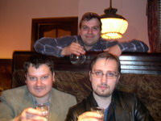
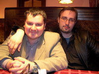
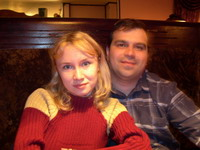
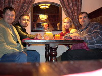
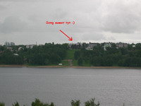
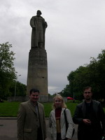
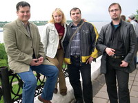
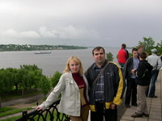
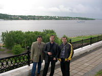

Встреча у Song-а
или "Как Миха всех забанил"
05 июня 2005 г. Кострома
Встреча у Song-а
05 июня 2005 |
Автор репортажа: Rouse_
От автора: Я конечно не Лебедев,
поэтому че получилось - то получилось :)
|
Совет дня:
Перед поездкой заранее уточняйте время и место сбора. |
Итак, поступило мне тут однажды предложение в пятницу после работы прогуляться до славного местечка Кострома. А почему бы и не сьездить? Местечко достаточно популярно у народа ;) Узнаю, какая программа:
Хм... оччень даже заманчиво. Ну что ж, где наша не пропадала? Праально, наша пропадала везде.
Сказано - сделано. Вот она, пятница, жду пяти часов, ибо договорились встретиться в половине шестого с благородной целью избежать пробок. (ЩАЗЗЗЗ :) ).
Выдвигаюсь на место. Первая незадача, я на месте встречи есть, а DimonF-а почему то еще нет :)
Ну лана, звоню, уточняю входные данные и зацикливаюсь (жду стало быть:).
Подходит DimonF, мы садимся в тачку и едем на второе место встречи, забирать подругу Димыча, девушку Наташу :)
Вторая накладка, мы на месте встречи есть, а девушки Наташи почему-то еще нет :) И труба ее не отвечает...
Димыч начинает нервничать и говорить что-то там про то, что не успеем выехать до образования пробок (наивный китайский въюноша)
И вот все в сборе. УРРРРААААА!!!! Мы едем в Кострому! :)))))
|
Совет дня:
Никогда не выезжайте в пятницу вечером за город. (Особенно в Кострому :) |
Вас когда нибудь обгонял велосипедист в тот момент, когда вы едете на машине? Нет? Ну а вот если бы обогнал, вы бы расстроились?
Ну ок, а если эта зараза обгоняет вас уже целых сорок минут, и причем, по всей видимости, имеет все шансы на успешный обгон, тогда что?
Как вы поняли, мы выезжаем из Москвы :)
Я немного обалдевший сижу в машине, Димка нервничает, Наташа в прострации, и справа величаво проезжает в который уже раз этот велосипедист.
Кстати, велосипедистам в пятницу вечером в Москве очень везет. По крайней мере на этих 12-ти км Ярославского шоссе, особенно в моменты пробок.
Начинаю тормошить народ, закуриваю сигарету и ору на весь салон.
"Давай, ДИМЫЧ!!! Сделай его!!!" (ну и там всякие Оле-оле-оле). Наташа тоже согласно кивает, мол, да, Димка, пора бы и честь знать...
Короче, через сорок или час двадцать минут велосипедист повержен и с позором оставлен за кормой нашей девяносто девятой. Нас ждет Кострома...
Кстати. Кто нибудь понимает этих чудаков, которые в выходные,
закинувшись рюкзаками и лопатами, прут во всю молодецкую прыть
на дачи с целью... (оцените красоту момента!!!)
... с целью проторчать все выходные пятой точкой к небу и
роясь в земле как кроты? Я категорически не понимаю.
Стоя в пробке и озираясь по сторонам, я по наивности подумал, что они тоже едут на дачу в сауне попариться, но понял, что вся эта толпа к Михе явно не поместится...
Значит, все-таки на дачу...
|
Краткая справка:
Дачники - "summer resident-ы", блин, отличаются умом и сообразительностью. Срываются на нерест каждую пятницу, забивая все магистрали на выезде. |
|
Совет дня:
Никогда не заказывайте в дорожных забегаловках водку. |
Одурев от дышания в пробке выхлопными газами рычащих машин, начинаю понимать, что у меня дико разболелась голова.
С одной стороны это хорошо - есть чему болеть. С другой неудобно...
Тонкость данного момента могут предугадать заядные любители сидения за компом по 9 и более часов в сутки, когда по окончании работы самый фикус состоит в том, чтобы принять чуток хорошего пива и просто расслабиться, отойти таксзать от дел мирских в необьятный залив нирваны...
Фих там!!! По молодости и неопытности мы не взяли сего живительного напитка в дорогу...
НО!!! Трасса была бы не трассой, если бы на ней не было придорожных забегаловок (пятизвездочных кафе, по словам хозяев, но с мухами)...
И VOT... на границе с Ярославской областью мы попадаем в сей "оазис" посреди пустынной трассы... (пауза в зале)
Вы умете отмахиваться от мух вилками? Нет? Ба... та вы не знаете жизни... Круче, чем в контру!
Описывать, что это представляет из себя, думаю не имеет смысла... Расскажу только о четырех вещах, которые поразили до глубины меня всего :)
Первое: возле таблички со входом сидят 4 таджика с шашлыком, которые вам услужливо подскажут, что вход с другой стороны здания :)
Второе: теперь я знаю, что в воздухе помимо кислорода и азота присутствует как минимум 18 процентов от объема мух и остальных летающих птеродактилей...
Третье: тут сделаю отступление...
Первым делом захожу в забегаловку (как вы помните, ужасно болит голова) и молвю:
- Пиво разливное нефильтрованное есть?
- Да, у нас отличный шашлык!!!
Впадаю в ступор... Спасает Димон, он требует все меню :) (Будете смеяться, но в меню есть карта вин :)
Заказываем перекусить (к слову будет сказано, жульен у них отменный). Отдельно от заказа прошу Путинки 50 грамм.
Вопрос:
Вы когда нибудь пили из пепельниц? ;) Нет? Опишу процесс...
Приносят посудину, диаметр почти 30 см, высота около 20-ти. (к слову в такой же принесли и сок).
Ну, что делать, голова болит, нужно поправиться. Грустно вздыхаю и пытаюсь опрокинуть в себя это...
Опа-на.... Какие добрые попались официанты, я заказал 50 грамм, а мне в эту пепельницу налили 200.
Такой удар по моему неиспорченному алкоголем организму, это как кирзовым сапогом по самой любимой части моего тела - по харду.
Ммммать... отплевываюсь, ищу глазами официантку и говорю, что сей графин в мою глотку не пролезет, и не соблаговолит ли любезная мисс (или как там ее), принести мне все ж таки нормальную человеческую стопочку?...
Кривой взгляд на нас (активно обороняющихся от мух)... но стопка была принесена... (к слову сказать, больше водки я там не пил, ибо КГ/АМ)
Налегаю на жульен и на шашлык (шашлык так себе, но питательно)...
Четвертая вещь поразившая меня - это туалет: В принципе, унитаз как унитаз, но вот дверь...
Благо дверь открывается вовнутрь и с должной сноровкой можно упереть ее ногой, при этом уютно расположившись на (пардон) унитазе :)
Отсюда мы и сделали первый звонок Михе.
- "Миха, у нас все нормально, нам уже начинает нравица ..." :)
|
Мораль:
Каждый зарабатывает, как умеет. |
Ну что за трасса, чтоб не было мент... пардон, ГИБДД? На последних 30 километрах, в начале второго ночи, нас перехватывает ночной партизан с палкой.
Понятно что денег не платят, но почему именно мы? На что выдан вполне разумный ответ...
"Вот на этом участке дороги 2 дня назад как нарисовали сплошную линию, поэтому мы тут и стоим". (ЗЫ: На этом стояла и стоять будет земля Русская)
Прониклись? Мы тоже... 500 рублей на дорожный налог, и вот мы въезжаем в Кострому...
|
Кстати:
Кострома, как и Кировоград, - город кротов. Все мужское население с утра выходит с двустволками и производит их массовый отстрел. Посему, дорожное покрытие немножко царапается... |
Вот он, момент истины. Димка запарковался у какого-то домика, типа "дискотека месная" - ждем Мишку. Время второй час ночи.
Проходит мимо нас какой то барыган (обрызгал, зараза, машину, пока лужу штурмовал), за ним второй. Что самое интересное: столько времени, а они уже все пьяные...
Идет третий и прямо на меня. Ну, думаю, чичас буду бить в глаз, если подойдет. И тут Димыч как заорет: "Миха!!!! А вот типа и мы!!!".
Пригляделся... Хе, действительно он :)))
Ну долго ли, коротко, поехали на его вторую квартиру, немного поразговаривали под водочку (с собой брали из Ашана). Мишка качество оценил.
Собственно приезд на место состоялся.
|
Совет дня:
Специально для Сишников: Не забывайте щелкать на фотки, чтоб их посмотреть в полный размер :) ЗЫ: картинки по 200 кб... (1024х768) |
Проснулись мы часиков в 11-дцать. Точнее, проснулся Димыч, а за ним потянулся Миха, сказав что спать рядом с этим локомотивом (со мной тобишь) он больше не могет. (Типа, храплю чутка. Ха... да что он понимает в полноценом отдыхе?! ;) ).
Минут через 5 встал и я, во первых, от их топанья по квартире, а во вторых, потому что я резко стал всем нужен и начал трещать сотовый.
И откуда мне только за эти 30 минут ни звонили! И с работы, и из дома, и друзья и девушки, я аж прямо растрогался ;)
Ну, потом мы их ждали. Недолго. Часа два. Как раз успели с Натахой фильм про Данди-крокодила целиком посмотреть.
Звонил я им раз 5 на трубу, они говорили что еще 5 минут и ФСЁ... они как штыки будут. Мдя...
Дальше ничего не было, пока мы не приехали в местную забегаловку с целью пожра.. пардон, вкусить пищи от местного шеф-повара :)
|
 |
Вот собсна первая фота :)
Из всего заказа пока принесли только водку :) |
|
 |
Очень знаете ли, плохо в тот момент фотоаппарат не хотел работать, никак фокус не брал, посему вот еще 2, не очень удавшихся:
Я с Song-ом |
|
 |
и Димыч с Наташкой |
|
 |
В итоге, при помощи местной официантки мы поймали фокус и снимок удался:
Вся компашка в сборе:) |
Перекусили и двинули на закупки, по дороге Наташка задала вопрос,
который мне особенно понравился:
- А Киров больше Костромы?
У меня хорошее чуство юмора, но я не сразу нашелся, что ответить. Кострому я вообще первый раз вижу, ну а где Киров, я даже примерно не знаю. Посему, сошлись на том, что больше тот город, в котором народа больше :) (Что в принципе в какой-то степени логично) ;)
До магазина мы не доехали, так как решили сначала осмотреть достопримечательности местные.
Короче, Кострома делится на 2 части - та, что город Кострома,
и та, где живет Миха. :)
Сплиттером является река Волга.
|
 |
Михыч почему-то сильно настаивал, чтоб мы сняли его дом...
Ну, раз надо, так надо :) Вот он:
Кстати, разливчик реки там не хилый, в районе 1200 метров. Чего-то даже объемистое плавает... |
|
 |
Сначала Миха повел нас на площадь Сусанина (нормальный такой намек?;). Vot тут я впервые за свои 26 лет увидел, как выглядит этот Гид всея Руси :) |
Оттуда мы прошли мимо памятника вечно молодому Ильичу. (Фотки не делали, но разве вы Ильича не знаете?) Проходя мимо него, Миха рассказал страшную историю о том, что однажды тут собрались все инетчики Костромы. Все 120 с небольшим человек. Типа мегасейшен. :)
Я сделал вид, что поверил :)
|
Подошли к набержной Волги, где произвели еще пару - тройку контрольных кадров:
   Там нам одна тетка засоветовала спуститься вниз, где мы можем увидеть беседку Островского (вроде так она называется). Короче, там все влюбленные собираются. Пока шли к беседке, Миха рассказал, что там с этой беседкой история связана. Мол, жила-была одна тетка, и уж очень у нее лубоффф неразделенная была к одному дядьке. Ну, она ничего умнее не придумала, как сигануть с этой беседки прямо в Волгу. После этого там все начали собираться, типа в дань традициям. :) Весело живет Кострома :)
Тут есть еще один прикол. От этой беседки до р. Волга более 50 метров. Прикидываю, это ж как нужно было подруге из Михиного рассказа разбежаться, чтоб не вмазавшись в деревья и другие строения влететь в саму Волгу?! Делюсь с ним сомнениями, на что он отвечает - Типа, все нормуль Санек, ту беседку давно уже смыло во время какого-то наводнения, а эту бетонную отстроили, чтоб на всякий случай.
Ну ладно. Город осмотрен, пора уж и выдвигаться на дачу: Для того, чтобы это сделать, нам нужно закупиться. Показывая нам направления, Миха кидается словами типа "Здание с красным хидером и зеленым футером", чем очень сильно удивляет Наташку, явно не понимающую данных секретных выражений. :). Нашли магазинчик, закупаем шашлычок, я беру 2 пиццы (чтоб перекусить по быстрому). Водочки, какой-то еды, мангал с углем и шампурами и еще чего-то. На выходе из магазина смотрю, что у всех какие-то хитрые лица. Думаю, что такое? ;) Оказывается, Дима случайно забыл пробить мангал с шампурами ;). Ну ,мангал на халяву - чем не празник? :) Едем на дачу.
Только выехали на трассу - у Михи звонок. Звонит Jassy. Передаю ей через Мишку привет и мысленно для себя отмечаю - так вот, значит, как называется "Славный Городок" из ее профиля. :) По определенным причинам, она занята, и поехать с нами не может, а жаль... Пока ехали, Мишка так по мелочи рассказывает о местных достопримечательнатях и замечает, что, мол, ребяты, когда приедем на место, вы не слишком смейтесь от слэнга местных аборигенов, он и для меня-то смешной, ну а для вас и подавно :) А говорок у них тот еще :))) Из 20 слов понятно только одно, максимум два. Песня "Здорово Кострома" отдыхает :)))
Пока разбирали вещи и собирали мангальчик, решили опрокинуть по стопочке с целью поднятия боевого духа.
Вот так вот: мы у них мангал свистнули, а они нам 2 заготовки впарили (но мангал таки дороже стоит! :)
Начинает холодать, народ перебирается поближе к огоньку. А с погодой нам в тот день не сильно повезло. Чуть ближе к вечеру приползла к нам тучка: Народ начал одеваться потеплее, откопали в сауне две шляпки шоб ухи не мерзли: Но у Михи шляпу быстро отобрали, и он погрустнел сел квасить: А Димка так просто не дался, сказал что она нужна чтоб уголь горячщий ухи не прижег: Вот такие они получились шашлычки, огроменные и вкусные :) Вот и дождик подоспел. Я заныкался под козырьком, а остальные под зонтиком Миха летитЪ с кендчупом на свежие шашлычки, ну уж очень торопиться. Так и хочется сказать: "Миха!!! Перед посадкой выпусти шасси" :) Кстати, у нас был шанс выиграть автомобиль, но уж очень лениво было :) Вот так мы и сидели. Кстати, обратите внимание на ближний стул. У него ножки почти в обрез веранды стоят. Я на нем сидел и все боялся что вниз рухну - но ничего, выстоял ;) А ближе к вечеру пришел месный дворьтерьер. Мы дали ему кличку "Шашлык". Простоял часа 3 возле нас все выпрашивал мясо, таки ведь выпросил :) Вы посмотрите на шашлычки, парок идет. Ммммммм, вкуснотища :))) А вот эту фотку Миха сказал себе в профиль повесит :) Наташа греется возле мангала, всей толпой уламываем ее идти в сауну, отбрыкивается. Мол, мальчики, я и так замерзла а вы меня еще и в баню тащите. :)) Но, как говориться, "Мужское обояние и монтировка, помогли преодолеть девичью скромность" ;) Забаненый номер раз: Забаненые номер два: Отдых после парилочки :))
"И был вечер, и было утро: день третий" © (Быт. 1).
Пиво из бочки мы все не выпили - не смогли :) Пришлось отдать месному природонаселению :) Впрочем бабка, которая забрала у нас его, была еще ничего, а вот судя по дедку - для него это будет ударной дозой :) Первым делом как выехали, решили повторить процесс с закупкой пицы, но уже проверяли, чтоб дали все как положено :) В этот раз не накололись :) Что понравилось у Михи дома - это 11 симкарточек. Ну вот вы мне скажите, нафига их столько, да еще в костроме? Долго мы не стали задерживаться. Сьели пицу, выпили (кто мог) по бутылочке пива, сфотографировали Михино рабочее место: Потом еще чуть поговорили, контрольный снимок на дорожку: И выдвинулись в обратный путь. Вот так и прошли эти веселые выходные :))) Чего и вам желаю :) |